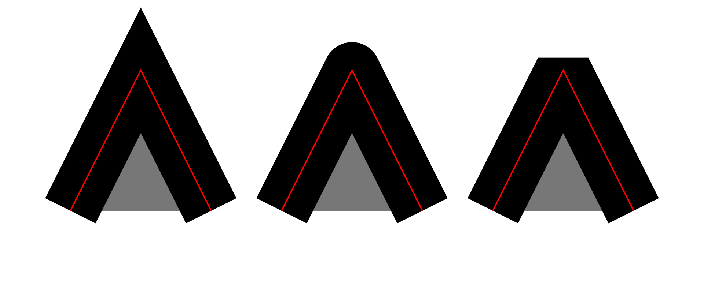
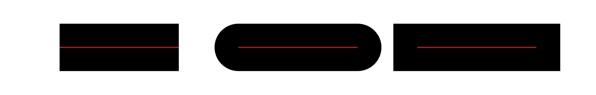
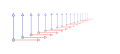
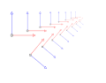
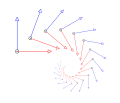
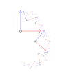

Los elementos geométricos son objetos provistos de atributos genéricos básicos y optativos o por defecto.
Todos los objetos se encuentran enmarcados en una ventana, con un ancho (width) y un alto (height) determinados con números enteros. Esta ventana posee un sistema de coordenadas cuyo origen está situado en la parte superior izquierda y en el cual los valores positivos de x y y se orientan a la derecha y hacia abajo respectivamente. Cada valor está determinado con números enteros o con un porcentaje respecto del área de trabajo.
Un sistema de referencia coordenado o un objeto determinado en el estándar se puede modificar mediante transformaciones. El ejemplo que sigue muestra dos transformaciones: una de posición (traslado) del origen de coordenadas, mediante la orden "translate" y otra de escala, usando la orden "scale".
<svg width="200" height="200" xmlns="http://www.w3.org/2000/svg" xmlns:xlink="http://www.w3.org/1999/xlink">
<g transform="translate(50,150)">
<g transform="scale(1,-1)">
. . .
</g>
</g>
</svg>
Atributos
Todos los objetos comparten algunos atributos genéricos:
- Todo elemento visual de una figura tiene un color con 4 posibles expresiones con el color negro por defecto:
- Nominalmente: red, yellow, blue, aqua, salmon, tomato, orange, lightgreen, etc.
- Con valores hexadecimales:
#ff0000,#ffff00, etc. - Con valores hexadecimales resumidos
#abc=#aabbcc:#f00,#ff0, etc. - Funcionales: enteros como
rgb(255,32,50)o porcentuales comorgb(100%,10%,0%). - Toda figura tiene un contorno cuyo grosor y color pueden ser modificados, respectivamente, usando los
parámetros
stroke-widthystroke. - Hay tres tipos de uniones de líneas:
stroke-linejoin="miter"(para ángulos menores de 30 grados se aumenta el valor entero del corrector, stroke-miterlimit="4", en caso contrario se transforma en "bevel"),stroke-linejoin="round"ystroke-linejoin="bevel"en la imagen respectivamente.

- Hay tres tipos de extremos de líneas:
stroke-linecap="butt",stroke-linecap="round"ystroke-linecap="square"en la imagen respectivamente.

- Se puede añadir bordes intermitentes siguiendo el patrón marcado por sucesiones de enteros con stroke-dasharray como por ejemplo stroke-dasharray="2,3,5,7,11,13".
- Casi todas las figuras tienen un relleno que puede ser modificado en color, fill, difuminado o filtrado de distintas formas.
- Toda figura tiene una opacidad, opacity, su valor varía entre 0(transparente) y 1(opaco por defecto).
Líneas
El objeto línea consta básicamente de dos puntos, (x1, y1) y (x2, y2), entre los cuales se dibuja un segmento recto:
<line x1="..." y1="..." x2="..." y2="..." ... />
Rectángulos
El objeto rectángulo consta básicamente de un punto cuya esquina superior izquierda u origen es (x, y), y sus dimensiones están representadas por los parámetros height y width:
<rect x="..." y="..." height="..." width="..." ... />
Círculo
El objeto círculo consta de un punto cuyo centro tiene las coordenadas (cx, cy), y su radio es r:
<circle r="..." cx="..." cy="..." ... />
Elipse
El objeto elipse consta de un punto cuyo centro tiene las coordenadas (cx, cy), un radio horizontal, rx, y un radio vertical, ry:
<ellipse cx="..." cy="..." rx="..." ry="..." ... />
Mixtilínea
El objeto mixtilínea consta básicamente de puntos unidos por líneas que pueden cerrar o no un espacio. Estos puntos forman cadenas iniciadas con M o m que pueden unirse con otras para formar un todo. El uso de mayúsculas se refiere a valores absolutos de coordenadas y de minúsculas para los valores relativos, es decir, considera el último punto dado como el origen de coordenadas.
<path d="M ... m ... M ... " />
Enlaces entre puntos:
- Si después de un punto es usada la orden L o l, los puntos siguientes se unen con segmentos rectos.
- Si después de indicar un punto aparece la orden H o V (para coordenadas absolutas) u h o v (para coordenadas relativas), ambos puntos se unen con una línea horizontal o vertical manteniendo fija la otra coordenada.
- Si después de un punto es usada la orden Q o q, se genera una curva de Bézier cuadrática, entre el primer punto y el último mediante un punto de control cuyas coordenadas aparecen después de la orden.
- T o t enlaza curvas de Bézier cuadráticas previamente trazadas, sucesivamente calculando cada vez de manera automática un punto de control.
- Si después de un punto aparece la orden C o c, la terna de puntos siguientes genera una curva de Bézier cúbica siendo los dos primeros, los puntos de control de ambos extremos de la curva y el último es el punto final de la curva que se une con el primero. S o s enlaza curvas cúbicas sucesivamente, calculándose de manera automática los puntos de control.
- Si después de un punto aparece A o a, se unirán los puntos extremos, P y Q con una curva elíptica o circular según los valores de los radios Rx y Ry respecto de los ejes de la elipse. El valor de U y V cambia la dirección y parte visible que presentan respectivamente relativos a P y Q, según sean 1 o 0. El valor de G es una rotación de los ejes de la elipse.
- Para cerrar curvas y trayectorias, se cerrará la cadena de puntos con Z o z independientemente si la orden está en mayúscula o no.
<path d="MPx,PxaRx,Ry G V U Qx,Qy" />
Aberturas:
Para generar una abertura en un recinto con interior(fill distinto de "none") se usa una cadena con orientación contraria al borde del recinto (hay dos posibles órdenes: el horario y el antihorario), esto generará un recinto cuyo interior tendrá una sola orientación, en caso contrario no hay abertura.
Texto
Se puede añadir texto, a partir de: un punto base x e y y se configuran las características de la cadena de texto con los parámetros: font-family (tipo de letra), font-size (tamaño de letras ) y estilo de letra por font-style (con uno de cuatro valores posibles: normal, inherit, oblique o italic):
<text x="..." y="..." font-size="..." font-style="..." > ... </text>
Agrupaciones
Se pueden agrupar objetos para que compartan atributos por defecto y una disposición fija en el espacio para poder duplicarlos cómodamente:
<g ... >...</g>
Duplicados
Para duplicar objetos tanto internos como externos se tiene que incluir en la etiqueta <svg> el siguiente fragmento:
<svg xmlns:xlink="http://www.w3.org/1999/xlink" ... > ... </svg>
Duplicado de objetos svg
Se puede duplicar objetos identificados previamente con id="...", donde el espacio de puntos indica el nombre.
<use xlink:href="#..."/>
Enlazado de imágenes
Se pueden añadir o incrustar enlaces a imágenes del tipo *.png, *.jpg o *.svg dentro de un rectángulo de parámetros x, y, width y height:
<image xlink:href=" ... *.jpg" x="..." y="..." width="..." height="..." />
Esta opción no es soportada por Wikimedia Commons.
Recortes
Se pueden recortar objetos mediante rellenos de otros objetos, por ejemplo, un círculo mediante un recinto triangular. En el ejemplo que sigue, la orden clipPath con el parámetro "id" identifica el nombre del área a recortar. La orden path siguiente con el parámetro clip-rule indica si un punto queda dentro del área de relleno (nonzero) o fuera (evenodd, como en el caso presentado). Luego de cerrar la orden con </clipPath>, la orden siguiente traza un círculo al cual se aplica el área recortada con el parámetro clip-path="url(#nombre del área)".
<clipPath id="cortador">
<path fill="#0ff" d="m119,71l-103,60l120,0" clip-rule="evenodd"/>
</clipPath>
<circle r="80" cx="12" cy="130" stroke="#000" fill=#999 clip-path= "url(#cortador)"/>
Transformaciones
Las transformaciones permiten efectuar semejanzas sobre imágenes mediante la matriz:

<g transform="matrix(a,b,c,d,e,f)"> ... </g>
- Traslaciones.
<g transform="translate(e,f)"> ... >/g>
- Rotaciones.
<g transform="rotate(g)"> ... </g>
- Simetrías.
<g transform="scale(k,k)"> ... </g>
- Homotecias seguidas de simetrías.
- Homotecias seguidas de rotaciones.
|  |  |  |  |
| Iteración de una homotecia. | Iteración de una homotecia seguida de una simetría. | Iteración de una homotecia seguida de una rotación. | Jugando con la alternancia de dos transformaciones |